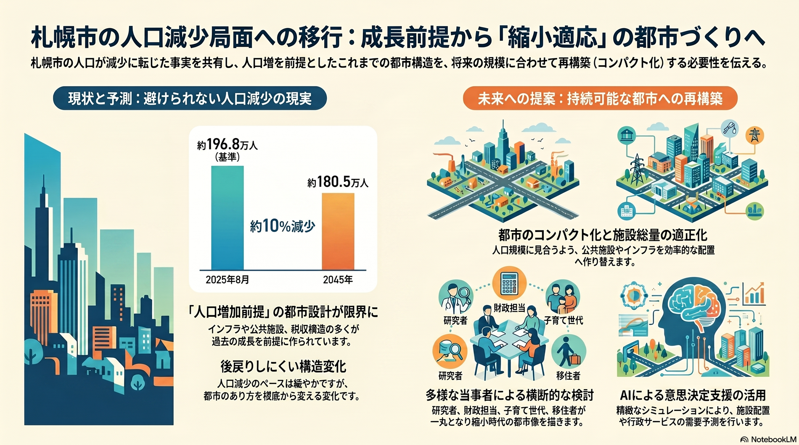

人口減少・高齢化
10年以内
人口減少局面への移行
増え続けてきた札幌の人口がピークを越え、減少に転じた。

背景
札幌は政令市移行後ほぼ一貫して人口を増やしてきた数少ない大都市だったが、近年ピークを越えた。インフラ・公共施設・税収の多くは人口増を前提に設計されており、縮小局面に合わせた作り替えが必要になる。
主要データ
| 推計人口（2025年8月） | 約196.8万人 |
|---|---|
| 2045年の推計人口 | 約180.5万人（約1割減） |
事実
- 札幌市の人口は政令指定都市移行後ほぼ一貫して増加してきたが、近年ピークを越えて減少局面に入った。
- 2025年8月時点の推計人口は約196.8万人で、将来推計では2045年に約180.5万人へ、おおむね1割の減少が見込まれている。
解釈
人口増を前提に整備してきた都市の規模・インフラ・税収構造を、縮小局面に合わせて作り替える必要がある。減少のペースは緩やかでも、後戻りしにくい構造変化である。
提案
- 人口規模に見合う都市のコンパクト化と公共施設の総量適正化。
- 出生・移動の両面からの対策（即効性は低く、長期の継続が前提）。
検討体制・メンバー
札幌市まちづくり政策局（未来創生）が司令塔となる。検討会には人口学・都市計画の研究者、財政部局、各分野（住宅・交通・福祉・産業）の担当、若者・子育て世代・移住者の当事者代表を横断的に集め、縮小を前提にした都市像を描く必要がある。
AIノート
AIの貢献度は中。将来人口・世帯の精緻なシミュレーションや、施設配置・行政サービスの需要予測で政策判断を支える。ただし人口減そのものを反転させる力はなく、AIは「縮小にどう備えるか」の意思決定支援が中心となる。